幅優先探索
実行例

ソースコード
通常
TypeScript: app.ts
アニメーション版
TypeScript: app.ts
アルゴリズム/解説
幅優先探索は木構造やグラフの探索を行うためのアルゴリズムです。

上記図でいうと、(1)を探索開始ノードとします。
次に線で繋がっている 1 つ離れた各ノード(2, 3, 4)を調べ、次は 2 つ離れた各ノード(5, 6, 7, 8)を調べ・・・と開始位置に近いところから網羅的に探索を行い、目的のノードが発見されるか、繋がっているすべてのノードを探索し終えるまでこの処理を繰り返します。
具体的なアルゴリズムは下記のとおりとなります。
- 開始ノードを配列に加えます。
- 配列から
先頭要素のノードを取り出します。配列が空なれば探索失敗となります。 - 取り出した要素が目的ノードであれば探索成功です。処理を終了します。
- そうでない場合、取り出したノードにつながっている
未探索の要素を全て配列の末尾に追加します。 - 2 に戻ります。
// マップ
let map: Cell[];
// 開始位置/目的位置
let sx: number, sy: number;
let gx: number, gy: number;
// 未探索ノードを格納する配列
let nexts: Point[];
// 開始地点から各ノードまでの距離
// 各ノードが未探索かどうかの判定に使用される
let dist: number[][];
// 未探索ノード配列に開始地点を登録
nexts = [{ x: sx, y: sy }];
// 各ノードまでの距離のデフォルト値の設定
// 極端に大きい値や-1のような、設定されることがないであろう値を入れておく
const INF = 1000000000;
dist = [];
for (let y = 0; y < H; y++) {
dist[y] = new Array(W).fill(INF);
}
// 開始位置までの距離を0にしておく
dist[sy][sx] = 0;
// 探索候補が無くなったら目的のノードが発見できず探索失敗となる
while (0 < nexts.length) {
// 配列から先頭要素のノードを取り出す
const next = nexts.shift();
const [cx, cy] = [next.x, next.y];
// 目的のノードなら探索成功。ループ処理を抜ける
if (cx == gx && cy == gy) break;
// 繋がっているノード位置を計算
for (let i = 0; i < 4; i++) {
const tx = cx + dx[i];
const ty = cy + dy[i];
// マップ外や通れないノード、すでに探索済みのノードならcontinue
if (!(0 <= tx && tx < W && 0 <= ty && ty < H)) continue;
if (getTile(tx, ty) != Cell.Floor) continue;
if (dist[ty][tx] != INF) continue;
// 開始ノードからの距離を更新することで、このノードは探索済みであることを示す
dist[ty][tx] = dist[cy][cx] + 1;
// 未探索ノード配列に追加
nexts.push({ x: tx, y: ty });
}
}
2D マップでの幅優先探索実装例です。
経路の出し方
ただ探索を行うのではなく、1-4-8 のように、開始～目的ノードまでの経路を出力したい場合があります。
prevs[index(nextNode)] = curNode;
その場合は連想配列などを用意しておき、今探索しているノードを、繋がっている次のノードのインデックスをキーとして保存しておくという方法があります。
prevs[2] = 1のノード;
prevs[3] = 1のノード;
prevs[4] = 1のノード;
たとえば 1 に繋がっているノードが 2,3,4 の場合は上記のように保存しておくと、2,3,4 のノードから前のノードである 1 にいつでもアクセスが可能となります。
// 連想配列を用意
prevs = [];
while (0 < nexts.length) {
const next = nexts.shift();
const [cx, cy] = [next.x, next.y];
if (cx == gx && cy == gy) break;
for (let i = 0; i < 4; i++) {
const tx = cx + dx[i];
const ty = cy + dy[i];
if (!(0 <= tx && tx < W && 0 <= ty && ty < H)) continue;
if (getTile(tx, ty) != Cell.Floor) continue;
if (dist[ty][tx] != INF) continue;
dist[ty][tx] = dist[cy][cx] + 1;
nexts.push({ x: tx, y: ty });
// 注目している地点(tx, ty)から前の地点(cur.x, cur.y)を参照するために連想配列に保存する
prevs[ty * W + tx] = { x: cx, y: cy };
}
}
2D マップでの経路保存例です。
let routes: Point[] = [];
// 目的地点から逆に辿る
let cx = gx;
let cy = gy;
while (true) {
// 逆に辿っているため配列に追加するときは前から要素を入れる
routes.unshift({ x: cx, y: cy });
// 開始地点まで来たら終了
if (cx === sx && cy === sy) {
break;
}
// 連想配列から前の地点を取り出す
const index = cy * W + cx;
const prev = prevs[index];
cx = prev.x;
cy = prev.y;
}
console.log(routes);
2D マップでの経路再現例です。
最短経路
開始～目的ノードまで複数のルートがある場合でも、幅優先探索は開始地点から近い順に走査を行うため、保存される上記の経路は最短経路であることが保証されます。